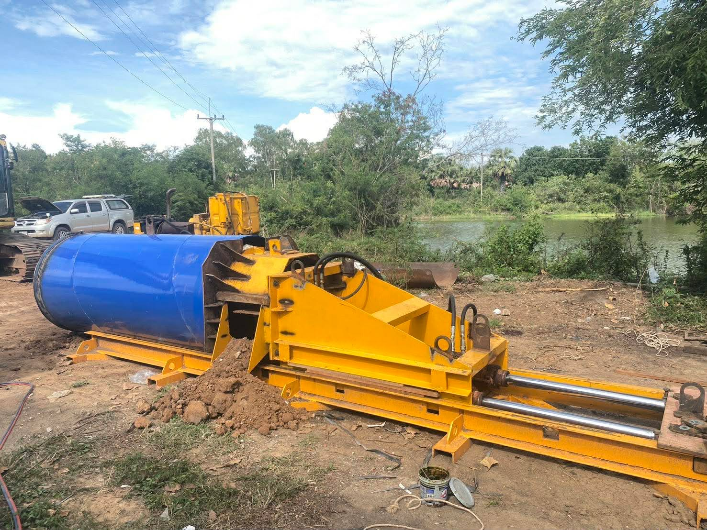
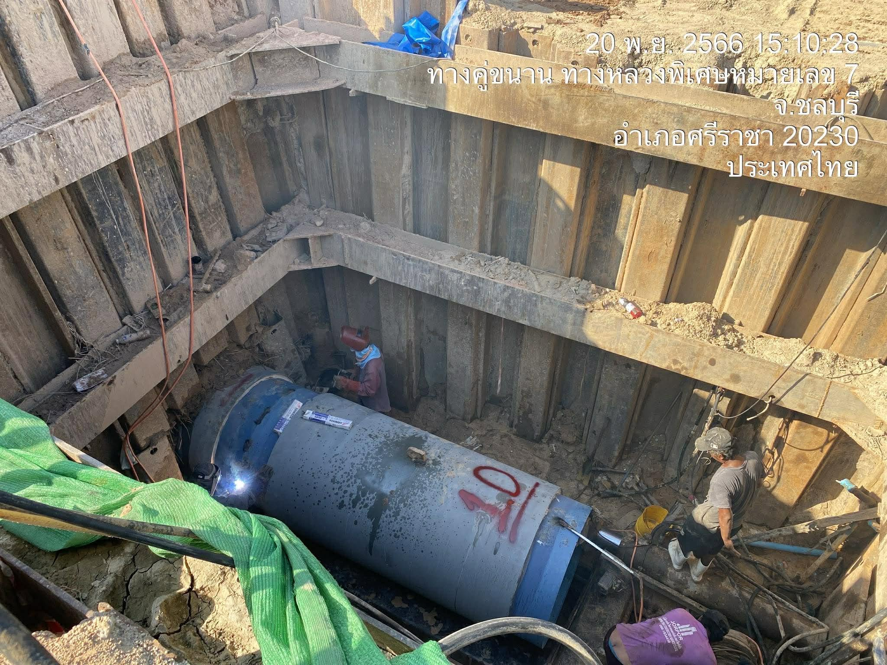
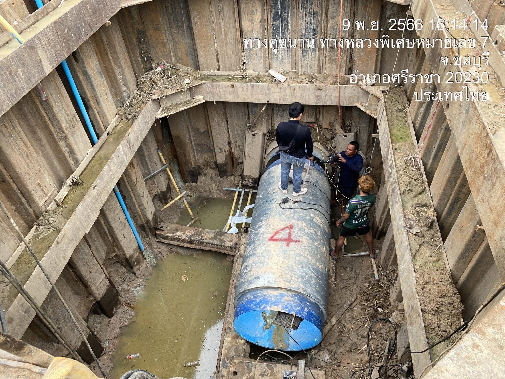
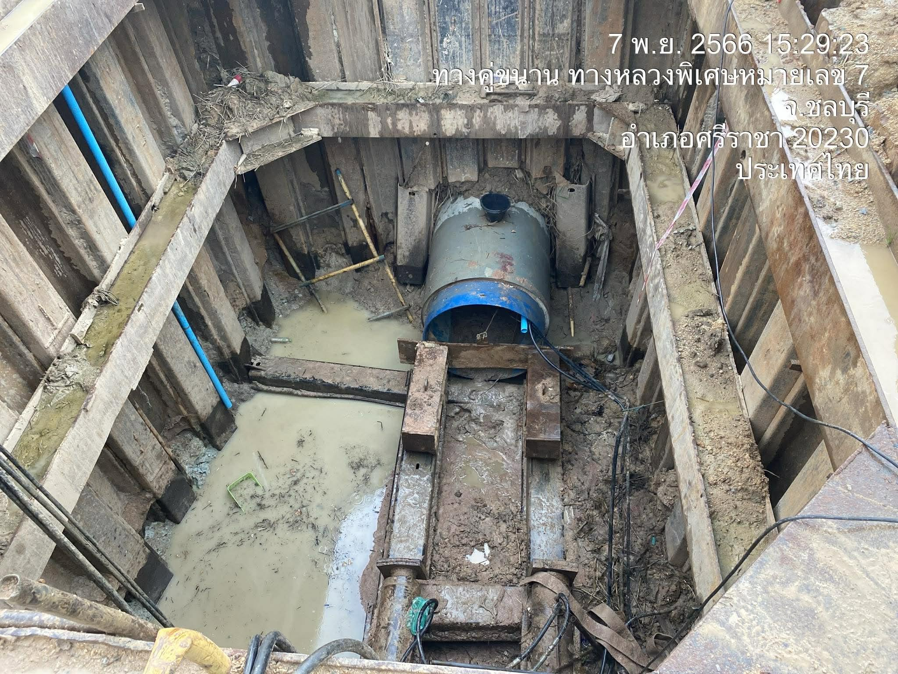
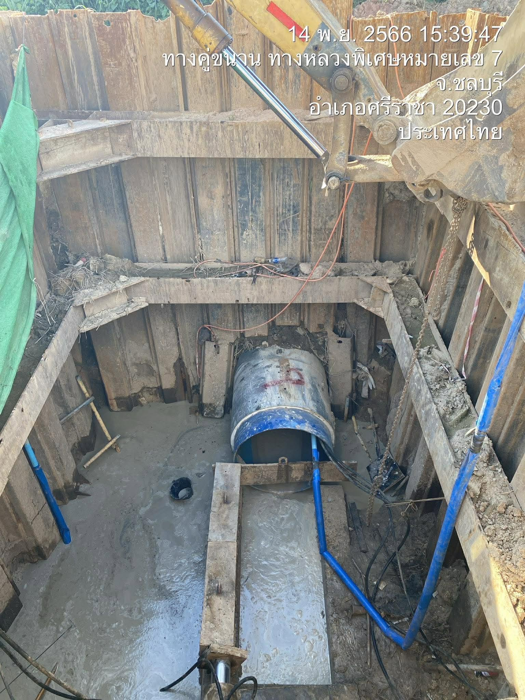
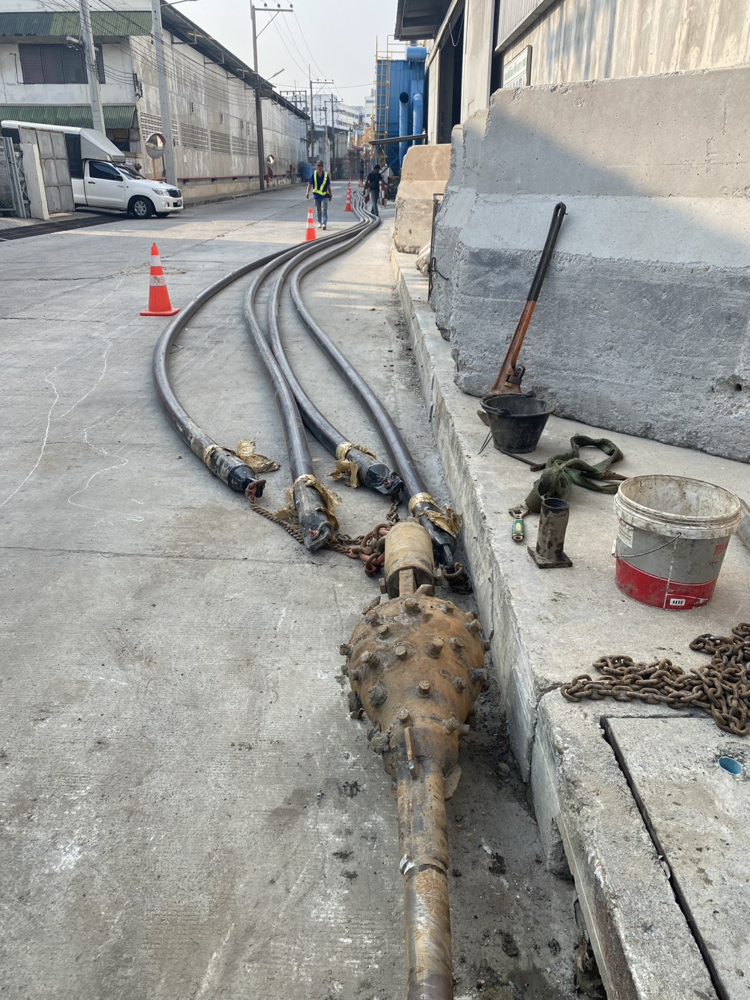
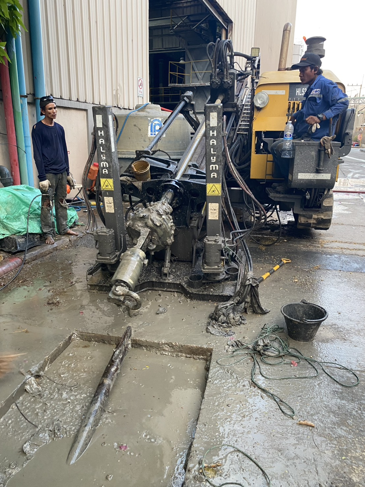
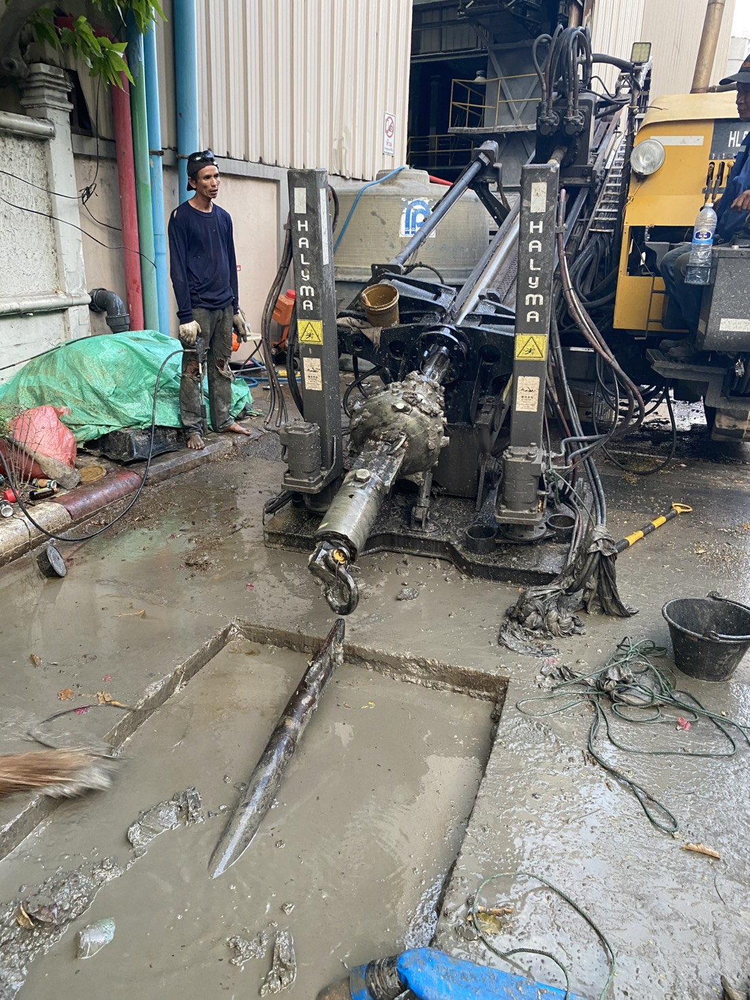
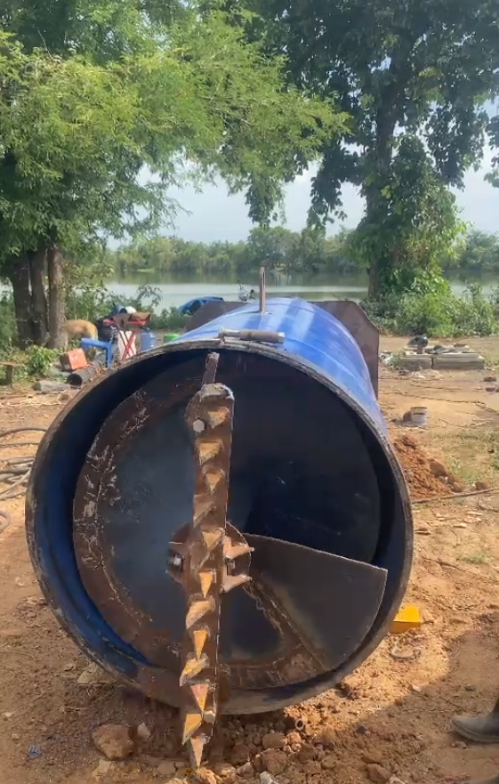

ผู้เชี่ยวชาญงานรับเหมาดันลอดท่อ (Pipe Jacking)
ให้บริการงานเจาะสำรวจ วางระบบท่อใต้ดิน ด้วยเครื่องมือและเครื่องจักรที่ได้มาตรฐาน

เครื่องจักรและอุปกรณ์ดันลอดท่อพร้อมปฏิบัติงาน
ชุดเครื่องจักรหลักสำหรับงาน Pipe Jacking (ระบบดันท่อ) ประกอบด้วยโครงแม่แรงไฮดรอลิก (Hydraulic Jacking Frame) สีเหลือง และท่อส่งกำลัง / หัวเจาะ (Shield Machine) สีฟ้า
ผลงานการดันท่อลอดในการปฏิบัติงานจริงในพื้นที่

งานขุดบ่อดันและติดตั้งท่อเหล็ก
บ่อเจาะลึก ขนาดใหญ่ที่ขุดลงไปใต้ระดับผิวดิน ซึ่งเป็นโครงสร้างชั่วคราวหรือถาวรสำหรับกระบวนการดันลอดท่อ บันทึกภาพเมื่อ 9 พ.ย. 2566 บริเวณทางคู่ขนานทางหลวงพิเศษหมายเลข 7 อ.ศรีราชา จ.ชลบุรี

การเชื่อมประกอบแนวท่อใต้ดิน
พื้นที่ปฏิบัติงานภายในบ่อขุดเจาะใต้ดินในช่วงระหว่างขั้นตอนการขับเคลื่อนและต่อแนวท่อ (บันทึกภาพ 20 พ.ย. 2566 ณ จุดก่อสร้างเดียวกัน)

การเตรียมบ่อขุดเจาะและแนวท่อลอด
สภาพภายในบ่อขุดเจาะ (Launch Shaft) ระยะเริ่มต้น บันทึกภาพเมื่อ 7 พ.ย. 2566 เวลา 15:29 น. บริเวณทางคู่ขนาน ทางหลวงพิเศษหมายเลข 7 อ.ศรีราชา จ.ชลบุรี 20230 แสดงการติดตั้งโครงสร้างเข็มพืดเหล็ก (Sheet Pile) และโครงค้ำยันรอบบ่อ บริเวณก้นบ่อมีน้ำขัง พร้อมทั้งแนวท่อลอดที่เตรียมพร้อมสำหรับกระบวนการดัน

การดำเนินงานดันลอดท่อลอด
การปฏิบัติงานเคลียร์พื้นที่ภายในบ่อขุดเจาะ บันทึกภาพเมื่อ 14 พ.ย. 2566 เวลา 15:39 น. ณ จุดก่อสร้างเดียวกัน (ทางคู่ขนาน ทางหลวงพิเศษหมายเลข 7 อ.ศรีราชา จ.ชลบุรี 20230) โดยมีแขนของรถแบ็คโฮยื่นลงมาเพื่อตักดิน โคลน และเคลียร์พื้นที่ก้นบ่อให้สะอาด พร้อมสำหรับการทำงานในขั้นตอนถัดไป
ผลงานการปฏิบัติงานจริงด้วยเครื่อง HDD ในพื้นที่

การเตรียมความพร้อมและวางแนวอุปกรณ์
การลำเลียงหัวเจาะขยายรู (Hole Opener) ทรงกรวยฝังปุ่มคาร์ไบด์สำหรับบดอัดชั้นดิน พร้อมทั้งจัดแนวสายส่งของเหลวและก้านเจาะไปตามพื้นที่ปฏิบัติงานเพื่อเตรียมเชื่อมต่อระบบเข้ากับเครื่องจักรหลัก

การปฏิบัติงานด้วยเครื่องเจาะแนวนอน
การขับเคลื่อนด้วยเครื่องเจาะแนวนอน (Horizontal Directional Drilling Rig) โครงสร้างเสาตั้งสีเหลือง ซึ่งปฏิบัติงานร่วมกับบ่อพักคอนกรีตและระบบน้ำโคลนหล่อลื่น (Drilling Slurry) โดยมีทีมช่างควบคุมการขับเคลื่อนก้านเจาะและหัวเจาะลงสู่ใต้ดิน

การควบคุมและตรวจสอบการขับเคลื่อนก้านเจาะ
การปฏิบัติงานต่อเนื่องของทีมช่างและวิศวกรในการควบคุมและสังเกตการณ์การเคลื่อนที่ของก้านเจาะและหัวเจาะขยายรู ณ บริเวณบ่อพัก เพื่อให้มั่นใจว่าแนวเจาะเป็นไปตามแผนงานที่กำหนดอย่างแม่นยำและปลอดภัย

การทำงานจริงของเครื่องเจาะ (คลิกเพื่อดูคลิปเต็ม)
โดยหัวเจาะด้านหน้ากำลังหมุนบดอัดและขุดเจาะชั้นดินพร้อมเศษหินอย่างต่อเนื่อง พร้อมทั้งลำเลียงวัสดุที่ขุดได้ผ่านระบบเกลียวภายในเพื่อระบายออกทางช่องด้านข้างของชุดขับเคลื่อนสีเหลือง ขณะเดียวกันกระบอกไฮดรอลิกกำลังปฏิบัติงานเพื่อดันแนวท่อเหล็กสีฟ้าให้เคลื่อนตัวรุดหน้าไปตามแนวเจาะใต้ดินอย่างมั่นคงและมีเสถียรภาพ
หากสนใจ หรือ ต้องการประเมินราคา?
ติดต่อสอบถามรายละเอียดเพิ่มเติมได้ตลอดเวลา ที่